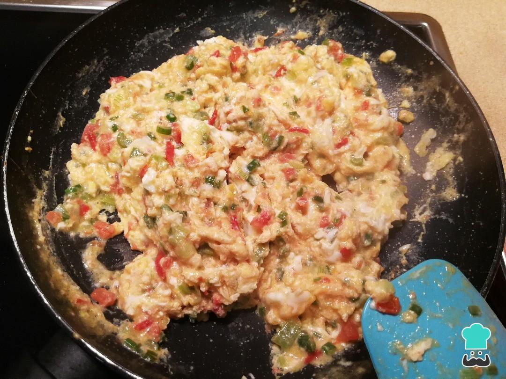

Huevos Rancheros

Lo mejor de un desayuno
ESte es uno de los desayunos más comunes de Colombia
Ingredientes
- Huevos
- Salchichas
- Una pastilla de caldo de carne
- Pimenton rojo y verde
- Cebolla
- Crema de leche
Pasos Para Hacer los Huevos
- Picar la cebolla, los pimentones y la salchicha
- Sofreir en una sartén los ingredientes picados
- Cuando se tenga un color dorado en la cebolla y un aspecto torrado en la salchicha, agregar crema de leche
- Agregar la pastilla de caldo
- Remover por 6 minutos
- Agregar los huevos
- Remover hasta que quede en la textura deseada
Return to home